Chapter 5 Results
5.1 General Picture of Crimes In New York State
How many crimes have taken placed in New York? What types of crimes happended most times in recent years? And are there differences of crimes happened in cities and non-cities? Here are the general results of these questions.
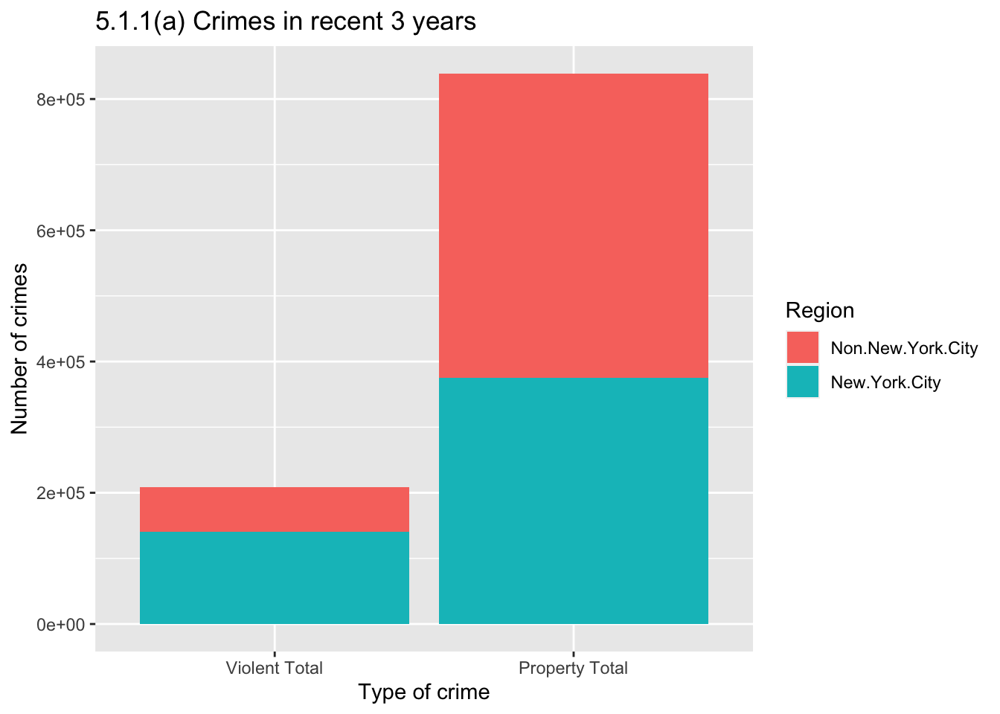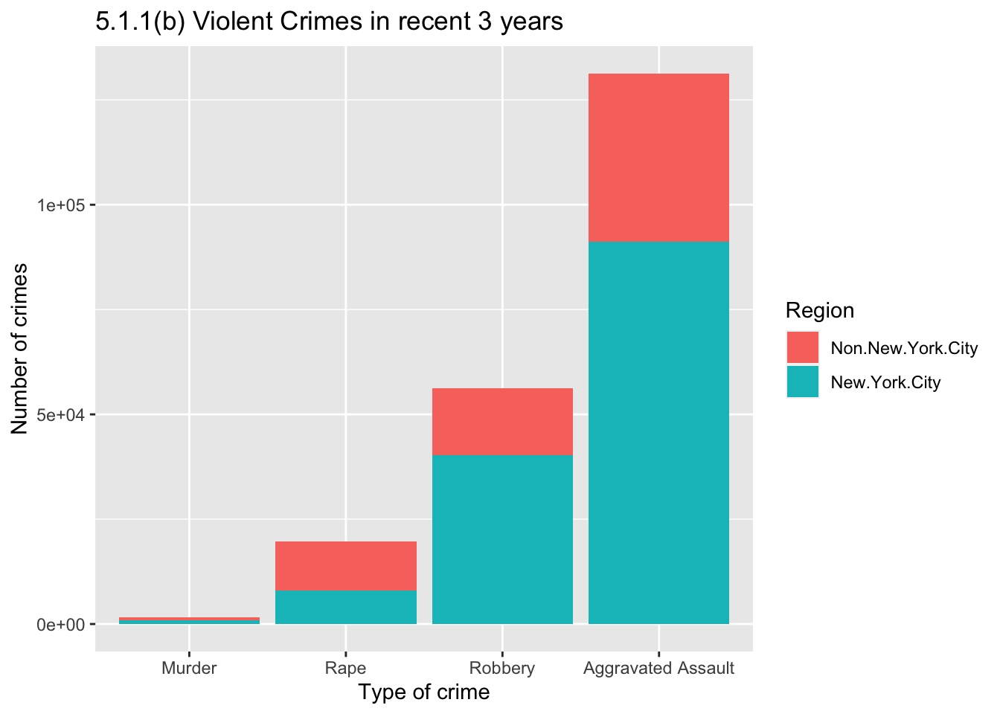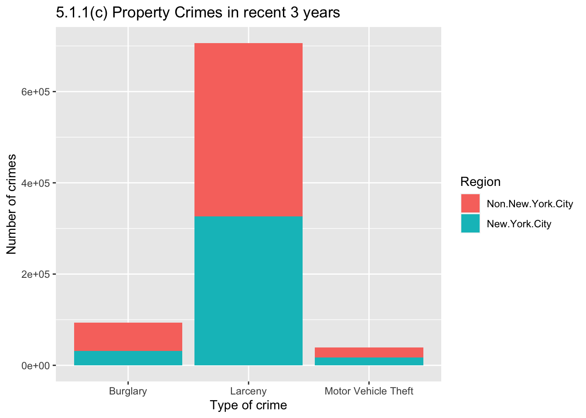
Crimes are classified into two broad categories: violent crimes and property crimes. Then violent crimes include Murder, Rape, Robbery and Aggravated Assault, while property crimes include Burglary, Larceny and Motor Vehicle Theft. We also divided crime by the reigion: city or non-city. And the data are the sum of the data in 2017-2019. From plot 5.1.1(a), we can discover that most crimes are property crimes, which takes up over 80% of the total crimes. Nearly half of the property crimes happened in cities, while almost 3/4 of the violent crimes happened in cities. Then we look into the specific types of crimes in New York. For violent crimes, the amounts of Murder, Rape, Robbery and Aggravated Assault increase in sequence and most happened in the cities. So for the people live in the cities, they should take care of being violated by these crimes. For property crimes, Larceny happened the most, which takes up 80% of the property crimes. And there are little differences between cities and non-cities.
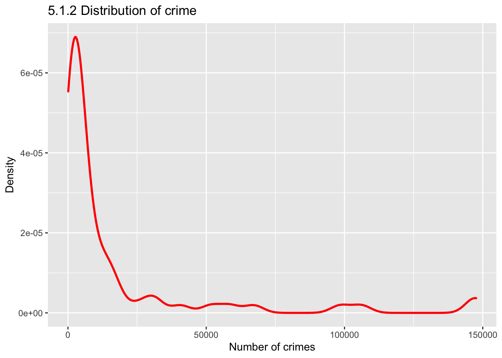
To show a general distribution of the crimes, we plot the density of counties by the number of crimes in plot 5.1.2. The x-axis is interval of number of crimes, while y-axis show the normalized ratio of counties in this interval. We can discover most counties has a low crime rate, while the counties of which total crimes in 3 yrs > 20,000 are the minority.
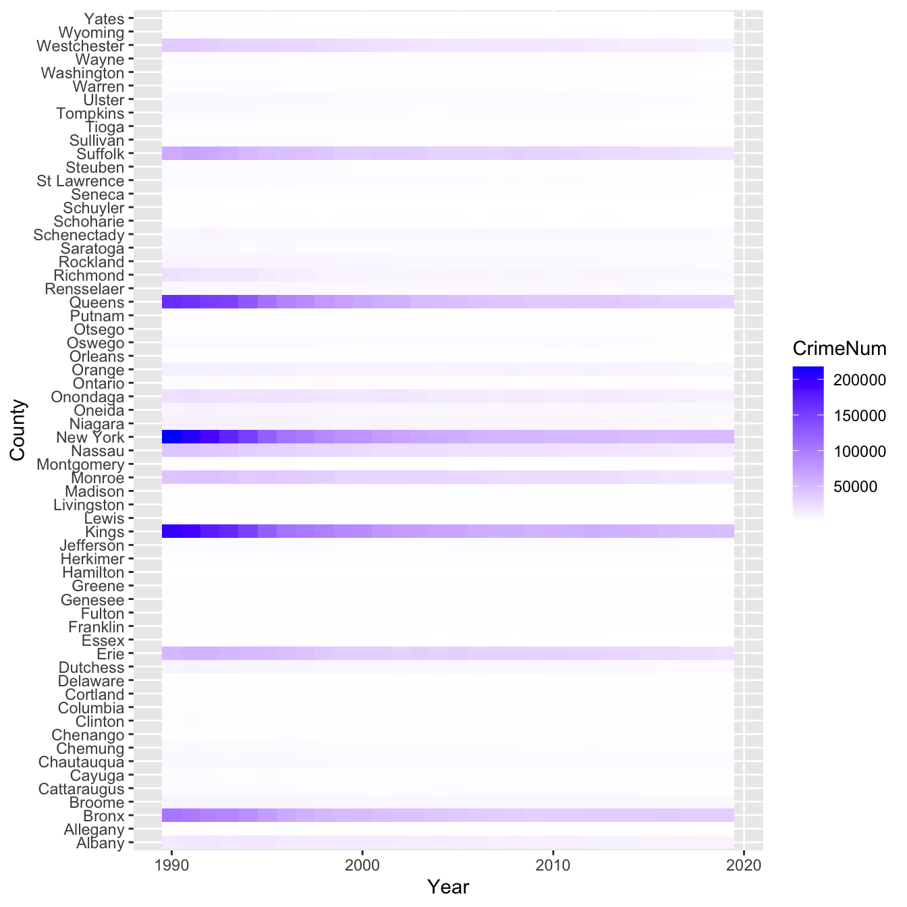
To show a general trend of crimes amount, we plot this heatmap of crimes in 5.1.3. In this general part, we used the origin data from the dataset. And we can see that the counties with high crimes amount showed in 5.1.2 has the trend that total crimes decreased every year.
5.2 Crime counts across the counties
After gaining a general picture on the whole state, we are now focusing on crimes across counties. We want to figure out the distribution of total crimes and the two subtypes. Fortunately, the dataset contains all the 62 counties in NY state. Since the time range of 30 years is too long, we just select the last 3 years in the dataset and sum them up, focusing on the crime situation in recent years.
Firstly, we drawn a cleverland dot plot of the crime counts in 62 counties, as shown in 5.2.1.
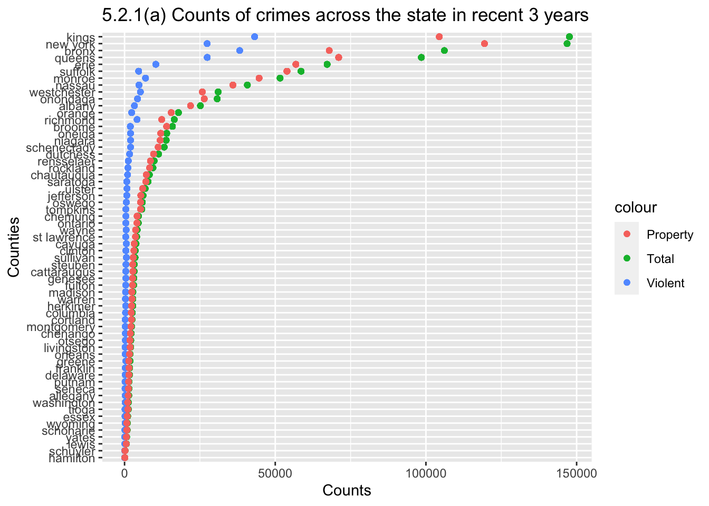
As shown in 5.2.1(a), kings and new york are the two counties with most crime counts, with a total count of nearly 150000. Situation in Bronx and queens are also serious, with a total count around 100000. Compared with other counties, the crime data of these four counties are far ahead. Ahout half of the 62 counties have a small count. To figue out the detailed situation, we can turn into a x_log scale:
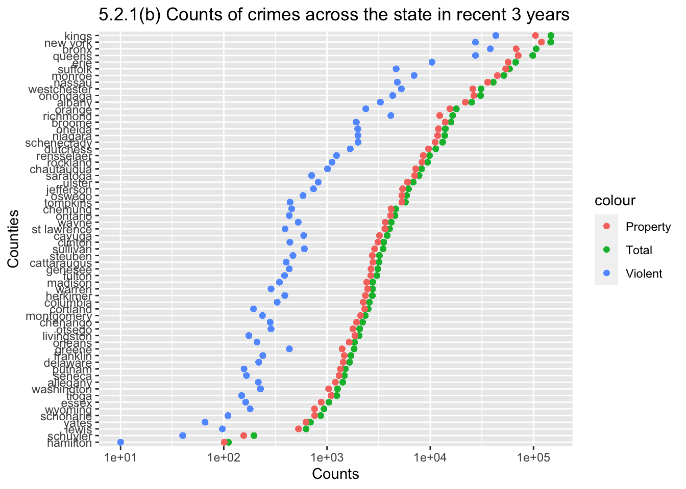
We can get the additional information that hamilton, schulivler, lewis, yates and schoharie and wyoming are counties with a total count under 1000 in 3 years, which indicated that these couties are relatively safe from crimes. About two thirds of the 62 counties have a total counts below 10000, which also proves our conclusion in 5.1. We can also say that Property crimes cover the most part in total crimes.
To indictates the distribution in a more straight-forward way, we try to plot the data on a map. We used the map_data in library “maps”. We select lontitude, latitude and county data from the library and join it with our dataset using county names. The following three heatmaps show the distribution of total, property and violent crimes across all the counties.
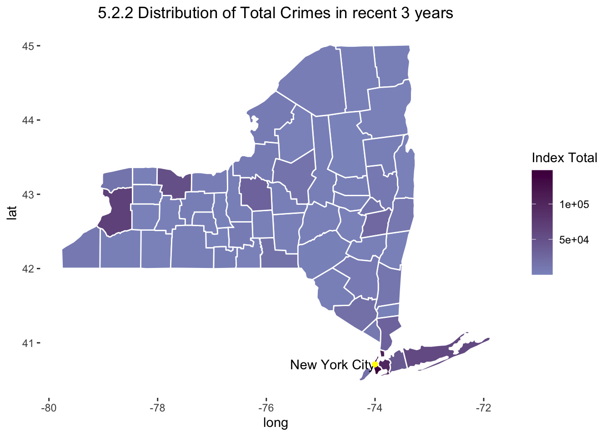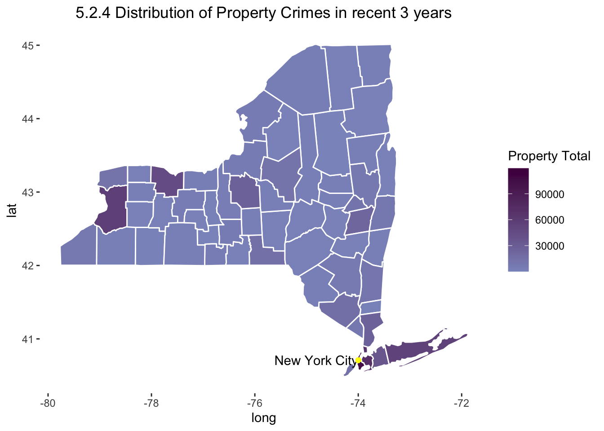
These three maps prove our conclusions clearly. We can see that the counties near New York City have the darkest colors. Erie and Monroe are also obviously darker than counties around. It is worth noting that Suffolk’s violent crimes are relatively at a medium level, while property crimes are at a fairly high level, which leads to a very high total count. Except for the mentioned obvious counties, In most counties, the number of crimes is at a relatively stable level in terms of color, which corresponds to our above conclusion.
We also plotted heatmaps on specific types of crimes(murder, rape, etc). However, due to limited space and intuitively similarity to the above three plots, we will not put this part of the picture here. In Chapter 6, we designed a dynamic clickable map, where the audience can intuitively understand the crime situation of each county in each sub-category crime.
5.3 Trends of crimes over 30 years
After analyzing features of crimes in recent years, we want to explorer the trend of numbers of crimes from 1990 to 2019, as well as the trend of different types of crimes.
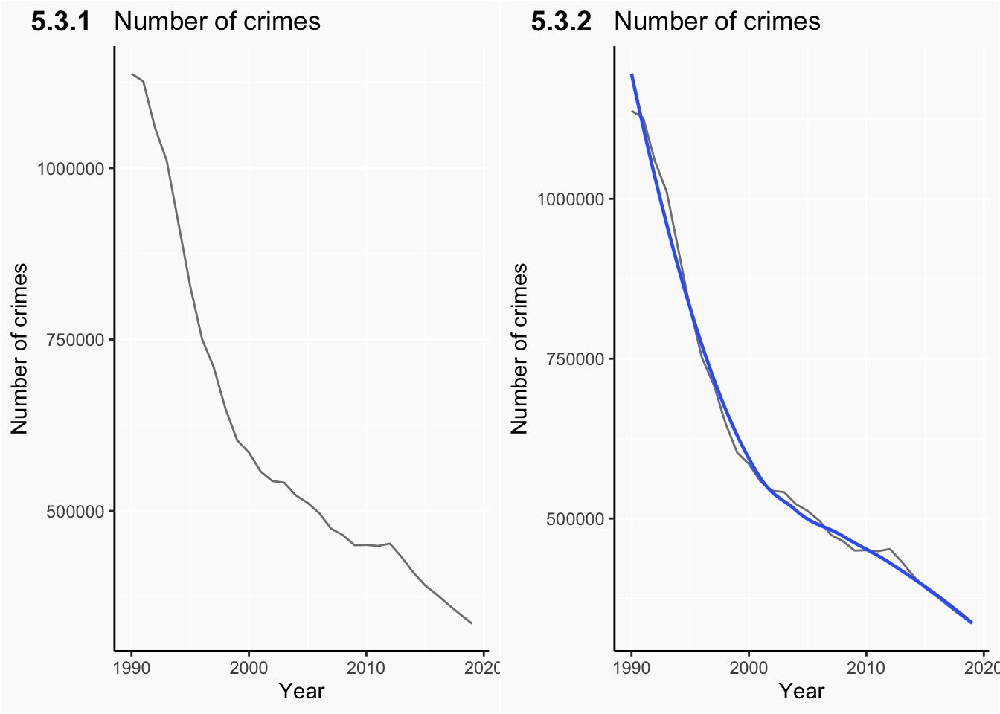
Plot 5.3.1 shows the general trend of number of crimes from 1990 to 2019. We can see crime cases reduced for about 100000 in last 30 years. It’s obvious the number of crimes is decreasing in general. And for the last 10 years of the 20th century, the number of cases dropped very rapid, with a slow drop continuing in next 20 years.
We also fitted our data to a smooth curve in plot 5.3.2. The curve is similar to an exponential function, which means it has a large gradient in first few years and has the quality of decreasing continuously.
Next we are interest in the time trend of all crime types in NY state in order to investigate which type of crime has caused the general decreasing. First we focus on two major types: violent crime and property crime.
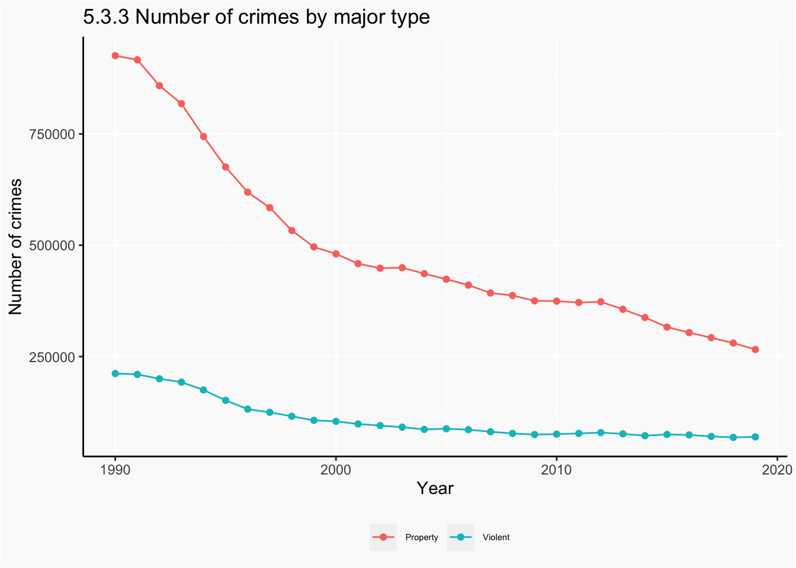
From plot 5.3.3, we can see that the number of property crimes reduced by about 300000 from 1990 to 2000, which contributes a major part to the rapid decreasing of crime number showed in plot 5.3.1 and 5.3.2.
As a minority of crime types, violent crimes also showed large decreasing trend from 1994 with respect to its initial number in 1990. Now we can say the public safety situation improved a lot in the 1990s, which may be highly correlated to mayor Giuliani III’s policies, including increasing members in police station, and increasing investment in public safety. After 2000, these two major types of crimes both decreased slowly, which is consistent with the general trend.
To further explorer the trends of all crimes, we draw the time series chart for all types of crimes as follows,
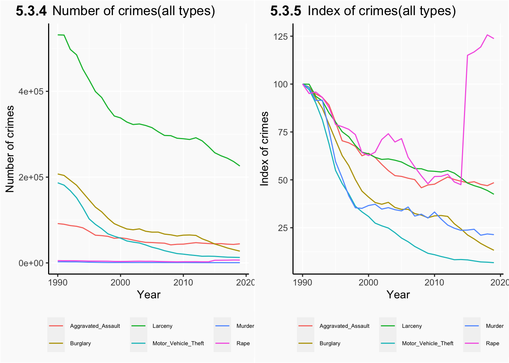
Plot 5.3.4 shows the time trends for all types of crimes from 1990 to 2019. It tells us the numbers of larceny, burglary, motor/vehicle theft decreased rapidly. However, it’s difficult to acquire trends when the number of a variable is small such as murder and rape.
To solve this problem, plot 5.3.5 provides index information about each type of crimes. Now small changes which may be difficult to examine can be find in plot 5.3.5. First, the numbers of all crime types decreased from 1990 to 2000, which is consistent with our analysis of plot 5.3.3. The largest number decreasing with respect to index is motor/vehicle theft, followed by muerder, burglary, aggravated assault and larceny. However, the number of rape cases started to oscillate after 2000, and even increased by a lot after 2013 while all other types decreased. Moreover, its trend is till going up in recent few years. It tells us though the public security situation seems to getting better, it’s still unsafe for women in New York compare with even 30 years ago. The reason behind increasing number of rape cases may reflect deeper social problems such as gender discrimination. We still need better policies to defend the rights of women in NY state.